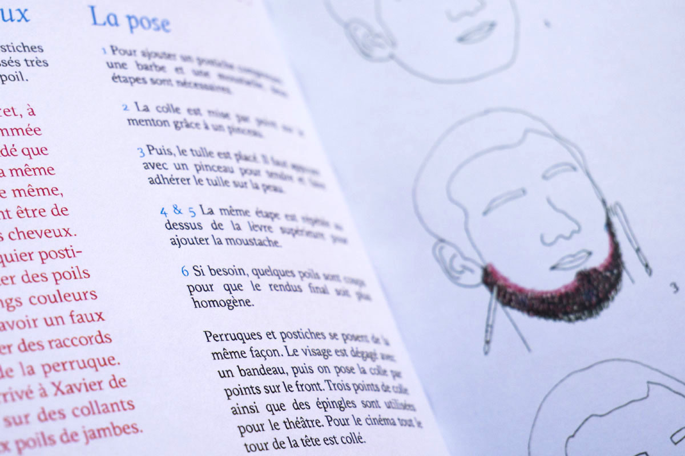
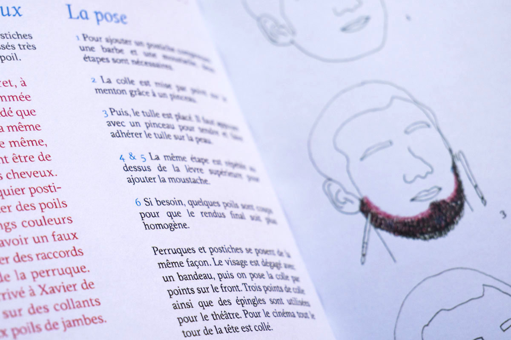

Le métier de perruquier
À partir de la thématique de savoir-faire, j'ai rencontré Xavier Pujol perruquier, maquilleur, posticheur au Théâtre du Capitole de Toulouse. Cette édition comprend une première partie présentant le métier de perruquier, plus spécifiquement dans l'atelier du théâtre du Capitole; une seconde partie exposant les gestes, les techniques et les outils de bases du perruquier; une dernière explicitant l'aspect relationel du métier. Cette dernière comprend une narration de la répétition générale à laquelle j'ai pu assister.
· Réalisation des illustrations, des photographies, de la maquette, de la rédaction et du façonnage
· 117 pages
· 2018